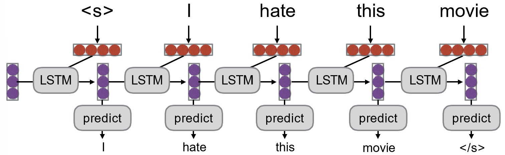
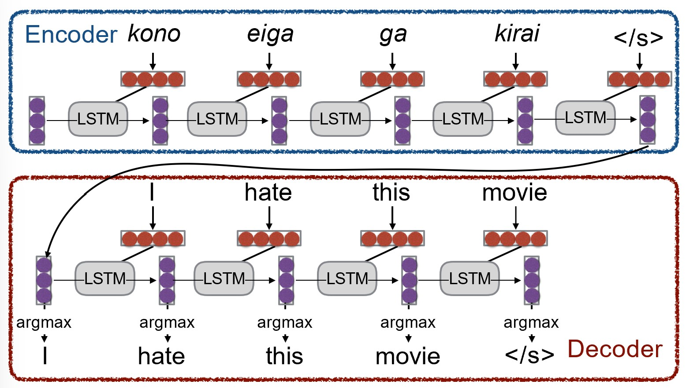
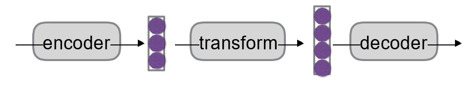
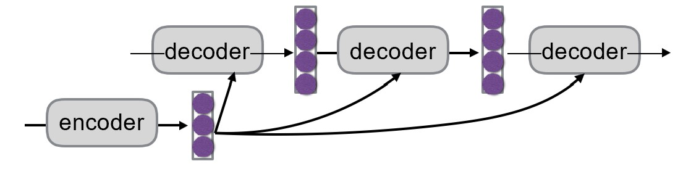

Chapter 6. 自然语言生成和神经机器翻译 Natural Language Generation and Neural Machine Translation¶
6.1 自然语言生成 Natural Language Generation¶
语言建模 Language Modeling-
给定一个序列，预测下一个词的概率分布，即 \(P(y_t|y_1, ..., y_{t-1})\)
语言模型 Language Model-
语言建模的模型。例如下图模型：
 RNN语言模型 RNN-LM- 使用RNN作为语言模型的模型
条件语言模型 Conditional Language Model-
给定一个序列以及一个条件，预测下一个词的概率分布，即 \(P(y_t|y_1, ..., y_{t-1}|x)\). 场景例如：
- 机器翻译中 \(x\) 为源语言句子，\(y\) 为目标语言句子
- 做摘要时 \(x\) 为原文，\(y\) 为摘要文本
模型例如：

条件RNN语言模型的训练¶
以机器翻译为例：
- 其中 \(J\) 表示损失函数（通过反向传播，最小化 \(J\) 来训练模型）
训练过程中，如果目标句子中某一个词预测错误，该把错误的词还是正确的词传下去？
教师强制（Teacher Forcing）：将正确的词传下去。但总是给予正确的词会导致模型过度依赖于训练数据，无法处理真实数据中的错误。
计划采样（Scheduled Sampling）：在训练过程中，逐渐增加将模型预测的词传下去的比例，减少使用正确的词的比例。这样可以让模型在训练时逐渐适应真实数据中的错误。
隐空间传递 Hidden State Passing¶
解决编码器和解码器之间的信息传递问题：
-
两者向量维度相同时，可直接传递；

-
变换
 -
每次解码都输入编码器的结果

解码（选词）算法 Decoding Algorithm¶
得到概率分布 \(P(Y|X)\) 后，有若干种选词的方法。
贪心搜索 Greedy Search¶
即Argmax，直接取概率最大的词
采样 Sampling¶
从概率分布中采样，可获得更高的多样性与随机性。（常用这个，这也是为什么现在的大语言模型能对相同的输入生成不同的输出）
束搜索 Beam Search¶
核心思想：解码的每一步都保留 \(k\) 个概率最大的词，以控制搜索空间。
- 第一步保留概率最大的两个词"a""b"，第二步也保留概率最大的两个词"b""b"，保证每一步只有 \(k=2\) 条“光束”
k的选择
- \(k\) 太小，会近似于贪心搜索（每一步都选择最优的，而一个句子生成的概率是其中每个词的条件概率的乘积（相互独立），如果前面一味选概率大的，后面的概率可能很小，总乘积反而更小），可能生成不符合语法的、不自然的句子
- \(k\) 太大，计算量大，且更倾向于选择短句子（因为词的概率都是0到1，句子越长，总概率乘积越小）以及常用词的组合
Softmax中的温度参数 Softmax Temperature¶
Softmax中的温度参数也是一种控制多样性的方法，但它不属于解码算法。
在 \(t\) 时刻，LM根据分数向量 \(s\in R^{|V|}\) ，使用softmax函数计算概率分布：
使用温度参数\(\tau\)来控制分布的平滑程度：
- \(\tau=1\) 时，softmax正常工作
- \(\tau>1\) 时，分布更平滑，选择概率小的词的可能性更高（温度高，熵高，更无序）
- \(\tau<1\) 时，分布更尖锐，选择概率大的词的可能性更高
Note
- 事实上做Scaled Dot Product时，除以\(\sqrt{|k|}\)就是在调整温度参数
评估 Evaluation¶
人类评估 Human Evaluation¶
效果好，但速度慢，成本高，且有一定主观性
BLEU¶
BLEU（Bilingual Evaluation Understudy）是一个自动评估指标，主要用于机器翻译的评估。它通过比较机器翻译结果与参考翻译之间的n-gram重叠程度来评估翻译质量。
- 1-gram重叠了3次，2-gram重叠了1次
- Brevity Penalty: 惩罚因子，防止生成的句子过短
BLEU只考虑了n-gram的重叠程度，忽略了语法、语义等其他因素，缺点显而易见。
METEOR¶
在BLEU的基础上，增加了对词形变化、同义词、顺序等的考虑。
缺点是对一些新语言/绝种语言的支持不够好。
困惑度 Perplexity¶
- 其中 \(N\) 为句子长度，\(P(w_i|w_1, ..., w_{i-1})\) 为模型预测的概率分布
现在非常常用的一个指标，对任何生成模型都适用。
6.2 神经机器翻译 Neural Machine Translation¶
机器翻译简史 A Brief History of Machine Translation¶
| 时间 | 特点 |
|---|---|
| 1950s | RBMT, 基于规则，使用双语词典映射单词 |
| 1980s | EBMT，基于实例，收集了大量数据 |
| 1990s - 2010s | SMT，基于统计，从数据中学习概率模型 |
| 2015 - now | NMT，基于神经网络 |
神经机器翻译简史 A Brief History of NMT¶
序列到序列模型 Seq2Seq Models¶
基于历史的RNN语言模型方法，直接预测 \(P(Y|X)\). 翻译可以在没有显式对齐信息的情况下进行。
缺点：所有信息都需要在中间状态传递，在长句子时可能会丢失信息。
注意力模型 Attention Models¶
通过对所有编码器的输出分配注意力，解决了长句子信息丢失的问题。
发展版本¶
V1: Encoder-Decoder¶
编码器将源语言句子编码成一个向量，解码器将该向量解码成目标语言句子。
V2: Sttention based Encoder-Decoder¶
编码器将源语言句子编码成一系列向量，解码器在每一步都对这些向量分配注意力。（这种方法称为 cross attention）
V3: Bi-directional Encoder Layer¶
编码器使用双向RNN来编码源语言句子，解码器仍然使用注意力机制。
V4: "The deep is for deep learning"¶
使用多层编码器和解码器，增加模型的表达能力。
V5: Parallelization¶
使用流水线并行化加速。
V6: Residuals are the new hotness¶
因为网络变深，使用残差连接来缓解梯度消失问题。
多语言模型 Multilingual Model¶
以前的做法是为每对语言训练一个模型，无法大规模使用和扩展。
在不改变模型结构的情况下，尝试把所有语言的语料都丢给模型训练，只在输入时添加语言标识符，表示需要翻译成哪种语言。发现这种方法的效果惊人地好！